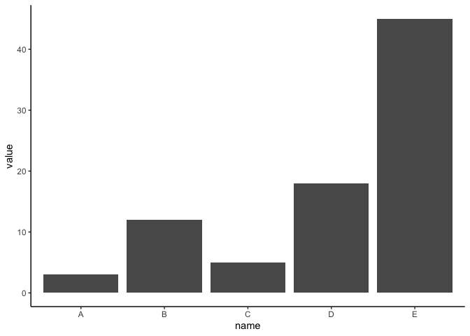

d <- read_csv(here::here(path_ready, "ready_merg.csv"), show_col_types = FALSE)Histograms
Stephanie Ward
In [2]:
In [3]:
d %>%
pull(ver_pc) %>%
hist(main = "Histogram of Verbal Cues - Raw",
xlab = "Verbal Self-Report",
col = "lightgreen",
breaks = 10)

In [4]:
d <- d %>%
mutate(
verb_bins = cut(
ver_pc,
breaks = c(-Inf, 0, 3, 6, 9, Inf),
labels = c("Not at all", "A little", "Somewhat", "Quite a bit", "Very much"),
right = TRUE,
include.lowest = TRUE
),
verb_bins = ordered(verb_bins,
levels = c("Not at all", "A little", "Somewhat", "Quite a bit", "Very much"))
)
# Verify
is.ordered(d$verb_bins)[1] TRUE[1] "Not at all" "A little" "Somewhat" "Quite a bit" "Very much"
Not at all A little Somewhat Quite a bit Very much
121 61 59 92 166 In [5]:
d %>%
ggplot(aes(x = verb_bins)) +
geom_bar(fill = "darkgreen", color = "black") +
labs(title = "Distribution of Verbal Consent (Ordinal)",
x = "Verbal Cue Endorsement",
y = "Count")
In [6]:
d %>%
pull(non_verb) %>%
hist(main = "Histogram of Continuous Nonverbal (0-10)",
xlab = "Nonverbal Composite Score",
col = "lightblue",
breaks = 10)
In [7]:
# Create ordered bins for nonverbal consent cues
d <- d %>%
mutate(
nonvb_bins = cut(
non_verb,
breaks = c(-Inf, 0, 3, 6, 9, Inf),
labels = c("Not at all", "A little", "Somewhat", "Quite a bit", "Very much"),
right = TRUE,
include.lowest = TRUE
),
nonvb_bins = ordered(nonvb_bins,
levels = c("Not at all", "A little", "Somewhat", "Quite a bit", "Very much"))
)
# Verify
is.ordered(d$nonvb_bins)[1] TRUE[1] "Not at all" "A little" "Somewhat" "Quite a bit" "Very much"
Not at all A little Somewhat Quite a bit Very much
45 33 99 146 176 In [8]:
d %>%
ggplot(aes(x = nonvb_bins)) +
geom_bar(fill = "darkblue", color = "black") +
labs(title = "Distribution of Nonverbal Consent (Ordinal)",
x = "Nonverbal Cue Endorsement",
y = "Count")